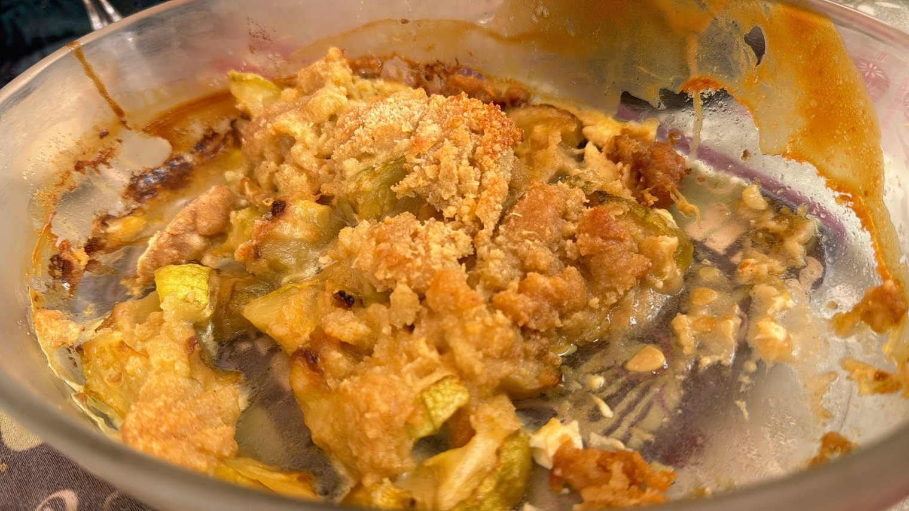
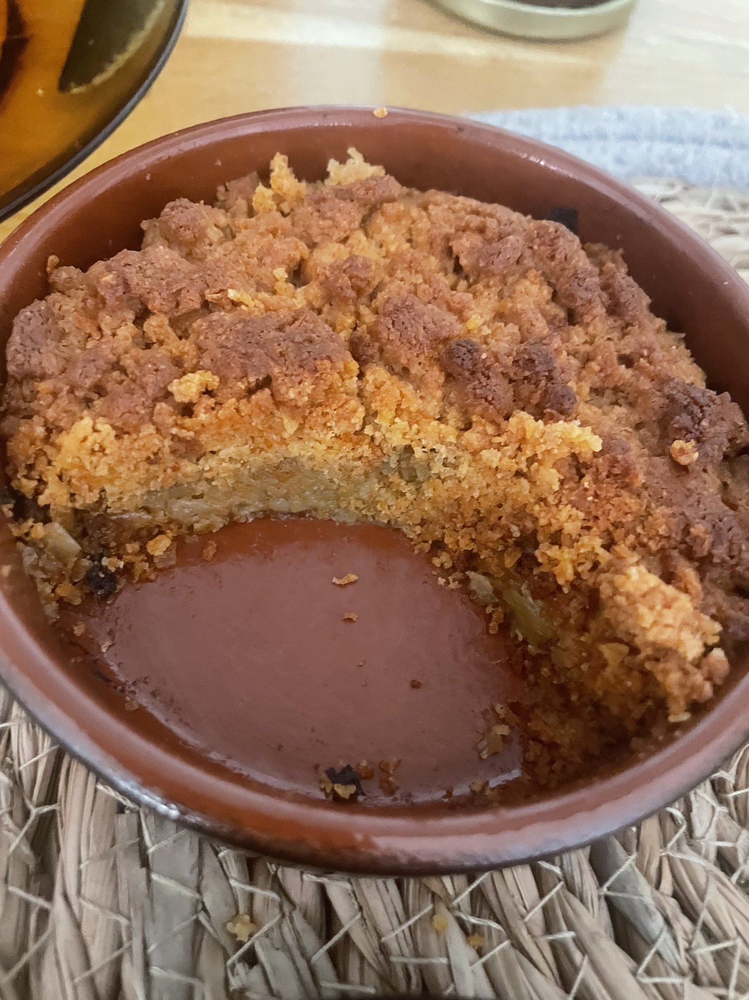

Crumble salé de Mami Josette
Ingredientes
×
- 150 g aprox. de mantequilla
- 150 g aprox. de harina
- 150 g aprox. de parmesano
- 1 cebolla
- 4 calabacines
- crème fraîche
- queso de cabra
- puerros
- comté

Preparación
Paso 1
Preparar el crumble juntando 150 g aprox. de mantequilla (no derretida), 150 g aprox. de harina y 150 g aprox. de parmesano.
Paso 2
Sofreír con aceite 1 cebolla cortada fina y alargada y 4 calabacines cortados finos en rodajas.
Paso 3
Cuando esté cocinado (no tostado ni muy reducido), ponerlo en una fuente y poner el crumble por encima.
Paso 4
Hornear hasta que el crumble esté dorado.
Paso 5
Variantes (según las fotos): con calabacín, crème fraîche y dados de queso de cabra; o con puerros y comté.
Resumen
150 g aprox. de mantequilla
150 g aprox. de harina
150 g aprox. de parmesano
Preparar
1 cebolla
4 calabacines
Sofreír
crème fraîche
queso de cabra
puerros
comté
Hornear
